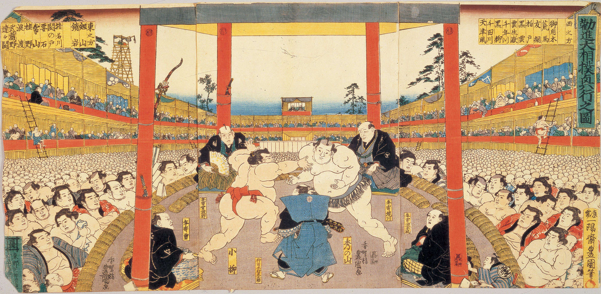
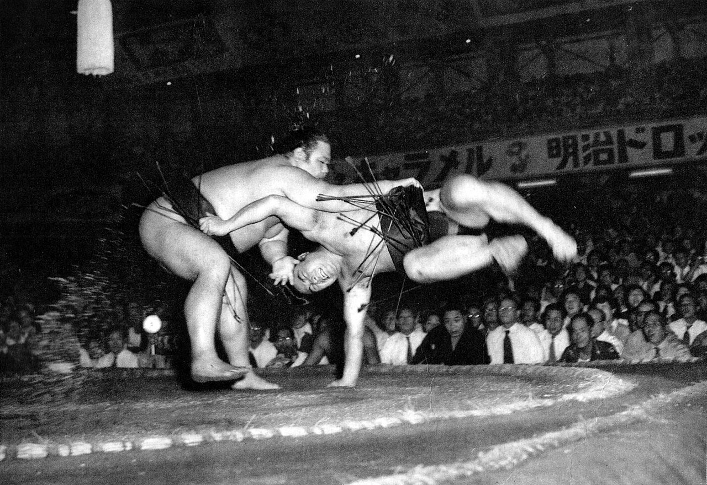
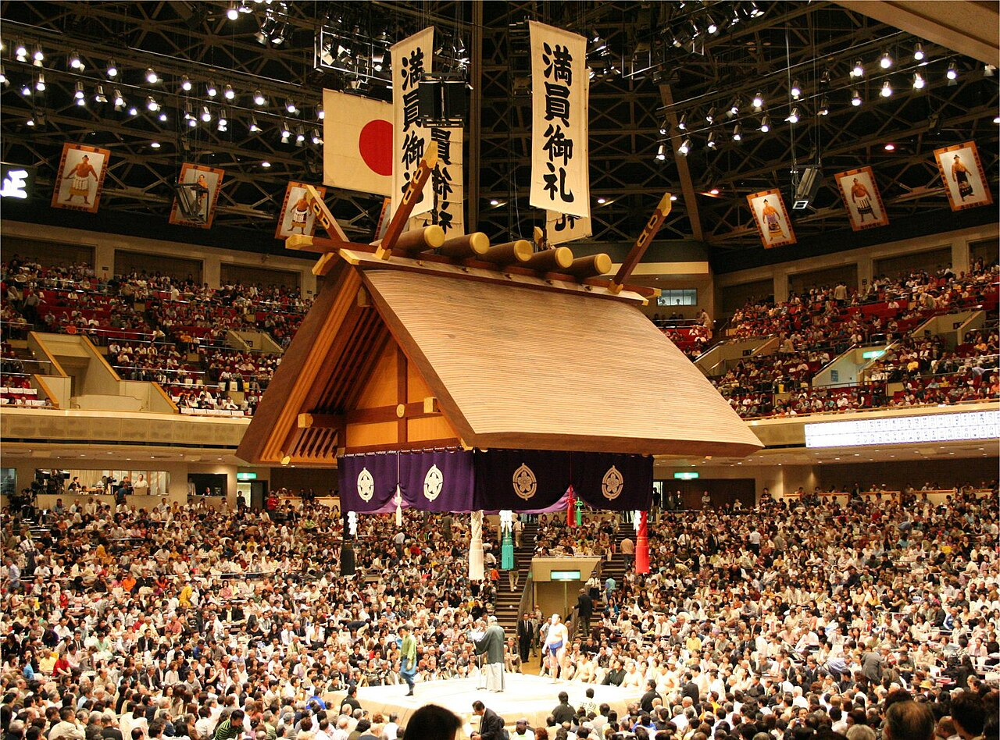

Welcome!
Welcome to my Csci 3054 Final Project about sumo, where I will be delving into the wonderful world of this facinating and entertaining sport to teach you all about it!
A Brief Introduction
Sumo, which literally translates to "striking one another", is a form of full-contact wrestling that originated in Japan. It is only practiced professionally in Japan and is considered Japan's national sport. While the sport started being practiced in its current form in the 1600s, it actually was first mentioned in writing in the 700s; back then, sumo was more of a spiritual ritual than a sport, but there are still some ritualistic and ceremonial roots that have stayed with sumo as it grew into a proper sport, such as the throwing of salt into the dohyo (the circular ring on which sumo bouts take place). The governing body of pro sumo is the Japanese Sumo Association, commonly refered to as the JSA; in addition to maintaining the rules and traditions of sumo, the JSA also dictates how the wrestlers live, which is in communal sumo training stables where the wrestlers live a highly regimented life of training and eating.


